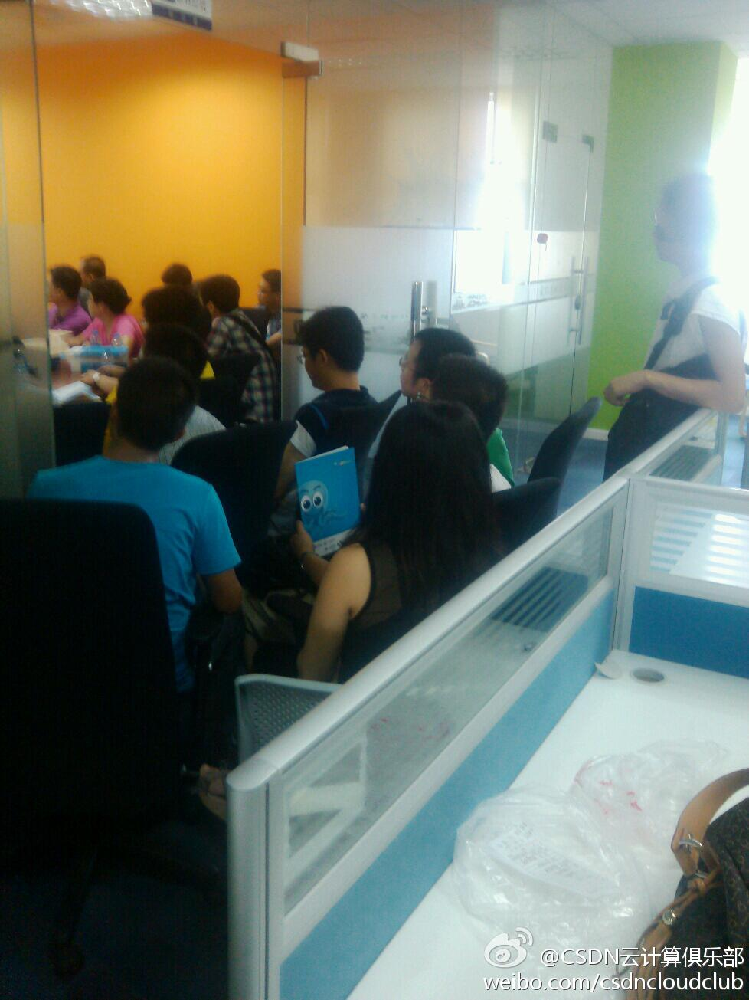
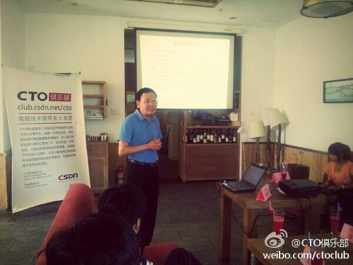

真是太热情了，之前谁说上海办技术活动大家参与热度不高的？@CSDN云计算俱乐部:CSDN云计算俱乐部上海hadoop活动爆掉了～8层，9层两个会场同时开场～参会者跟抱歉……我已经努力了@Ada李力 我在:博霞路 
熊总之前在部队呆过十年，98年进入互联网，绝对是老兵，一直做CTO。曾创业，建立的公司被收购整合后，他就回到北京继续做CTO。分享话题是《用7S构建管理框架》@CTO俱乐部:CTO俱乐部下午茶新一期活动火热进行中，@当当网 CTO熊长青正在给大家分享他的电商技术管理实践经验。 